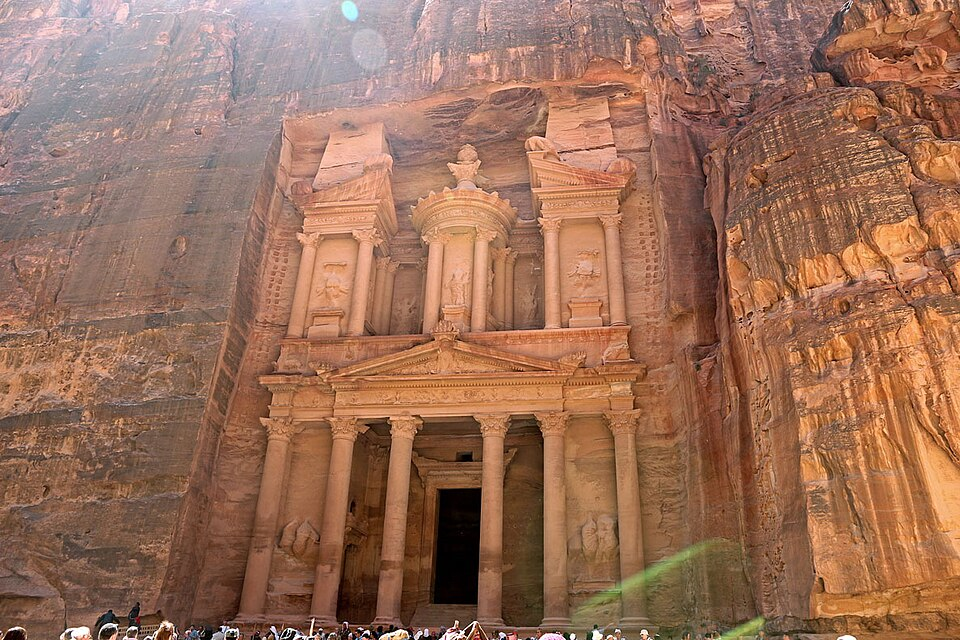

L’article 56 de la loi agricole : permis, espèces protégées et méthodes interdites, à distinguer des décisions saisonnières.

La chasse terrestre en Jordanie relève d’un dispositif associant permis, protection des espèces et restrictions de lieux et de périodes. La loi agricole n° 13 de 2015, telle que modifiée, constitue une référence centrale. Son article 56 concerne les oiseaux et les animaux sauvages. Cet éclairage présente un cadre existant ; il n’annonce ni nouvelle loi ni ouverture de saison. Le ministère de l’Agriculture répertorie la loi et ses modifications dans son catalogue officiel.
La loi habilite le ministre à préciser les conditions des permis, les zones, les dates et les espèces protégées. La Société royale pour la conservation de la nature (RSCN) indique que le comité de protection de la faune fixe chaque année les zones, les saisons et les quantités autorisées, publiées sur ses sites. Il faut donc vérifier l’espèce, le jour, le lieu et le quota applicables, en complément du permis. Le calendrier d’une année précédente ne suffit pas. Réglementation de la chasse, RSCN.
La RSCN propose un service de demande de permis en ligne. Le guide ministériel des services de 2015 mentionne aussi des justificatifs relatifs à l’arme de chasse et l’accord du ministère de l’Intérieur. Les exigences concernant l’arme appellent donc une vérification distincte. Ce guide étant ancien, les documents et frais actuels doivent être confirmés auprès de l’autorité compétente. Guide historique des services agricoles de 2015.
L’article 56 prévoit également des interdictions : chasse dans les réserves naturelles ou pastorales et dans certaines zones habitées ; utilisation de véhicules, projecteurs ou armes automatiques pour chasser ; recours aux poisons, substances adhésives et à certains procédés de capture. Il protège les nids, les œufs et les jeunes. La chasse des rapaces et des animaux sauvages prédateurs nécessite l’accord du ministre. Les espèces dont la chasse est interdite sont réparties en trois listes selon leur degré de protection. Loi agricole, article 56.
Selon l’infraction, les sanctions comprennent amendes, emprisonnement et confiscation des animaux, équipements et armes. Des amendes aggravées sont prévues en cas de récidive dans le délai fixé.
Avant toute sortie, il convient de vérifier permis, annonce saisonnière officielle, espèce, lieu et situation de l’arme. Cet article ne confirme aucune ouverture de saison à sa date de publication. Il fournit une information générale, sans constituer un conseil juridique personnalisé.
Lire les textes juridiques intégraux
Crédit de la photo du monument: Petra, Al Khazneh - panoramio.jpg — Banja-Frans Mulder — CC BY 3.0. Copie redimensionnée, sans modification éditoriale.